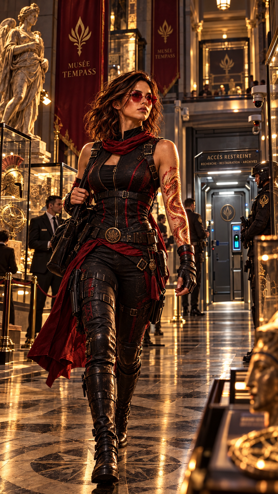
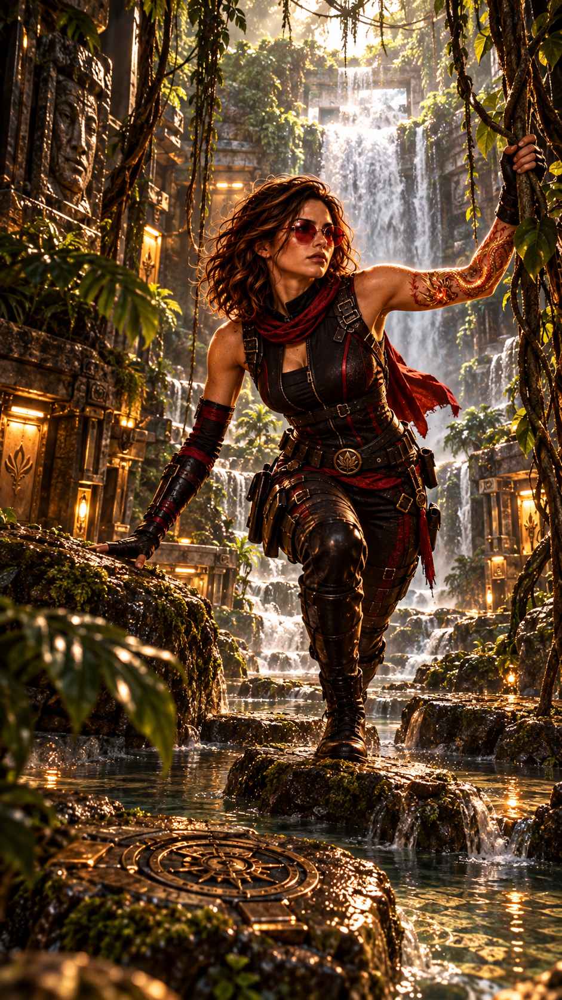
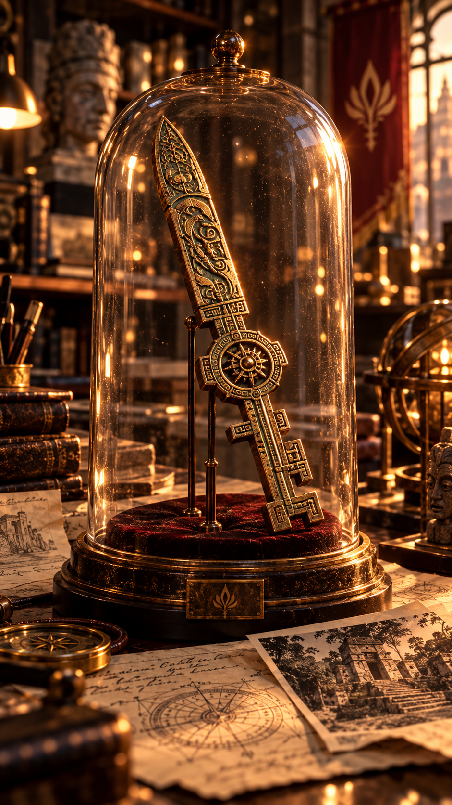
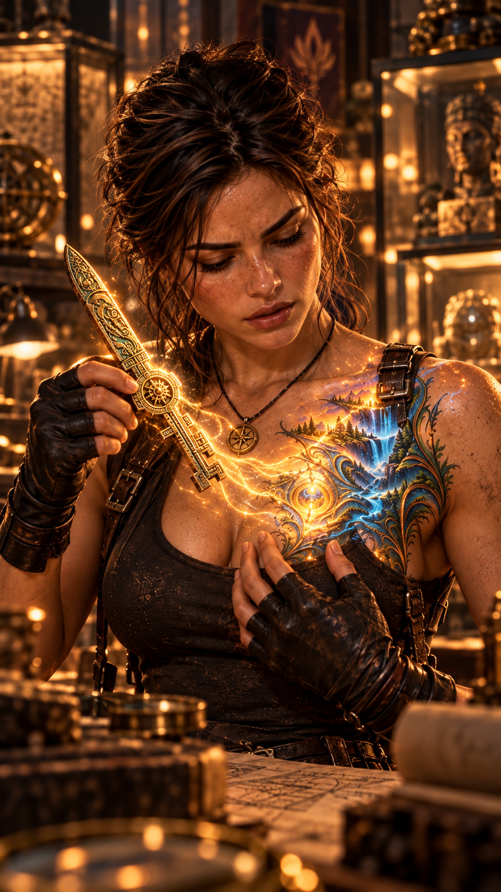
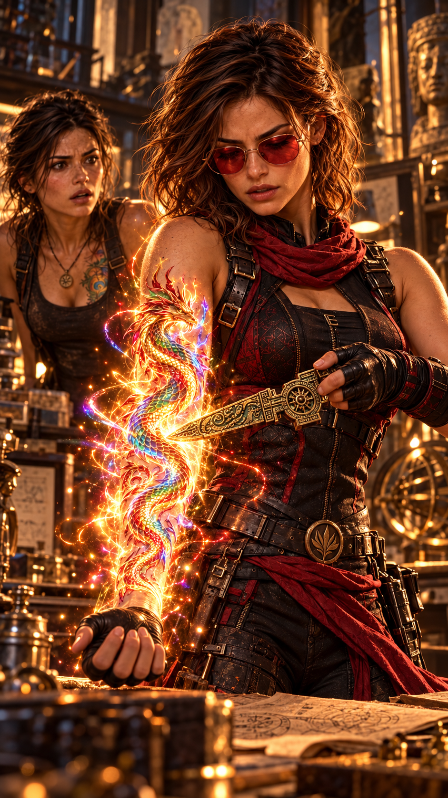

Hope rejoint Root au musée Tempass.
À son arrivée, elle salue plusieurs membres de la sécurité ainsi que les Sentinelles présentes dans le bâtiment.
Elle traverse une grande partie du musée avant d’atteindre un couloir beaucoup moins fréquenté.
Au fond se trouve une porte d’apparence presque ordinaire.
Presque.
Hope s’arrête devant elle.
Une première caméra analyse son visage.
Une seconde vérifie la rétine de son œil droit.
Puis elle pose la main sur une surface intégrée à la poignée.
Quelques secondes plus tard, un déclic sourd retentit.
La lourde porte blindée s’ouvre.
Hope la franchit et jette instinctivement un regard derrière elle.
Elle attend que le verrouillage soit totalement réactivé avant d’avancer jusqu’à une petite plateforme.

Devant elle s’étend un passage pour le moins inhabituel.
Une véritable jungle artificielle.
De l’eau recouvre une partie du sol.
De gros rochers émergent ici et là.
Des lianes descendent des murs et du plafond.
Tout au bout du parcours, une cascade dissimule complètement la sortie.
Hope sourit.
Elle a toujours adoré cet endroit.
Mais elle sait aussi que ce décor n’a rien d’une simple fantaisie de Root.
Certaines pierres peuvent être utilisées.
D’autres déclencheraient immédiatement le système de sécurité.
Certaines lianes permettent de progresser.
D’autres sont de véritables capteurs.
Première étape
Deuxième étape
Dernière étape
Hope connaît le parcours.
Elle saute sur une première pierre, évite soigneusement la suivante, saisit une liane et rejoint une autre plateforme.
Quelques instants plus tard, elle arrive devant la cascade.
L’eau s’interrompt aussitôt.
— Toujours aussi théâtrale, Root…
Hope traverse.
Un scanner procède alors à une analyse corporelle complète.
IDENTITÉ — CONFIRMÉE
ANALYSE — TERMINÉE
MENACE DÉTECTÉE — AUCUNE
ACCÈS AUTORISÉ
Quelques secondes plus tard, une dernière porte s’ouvre.
Le laboratoire privé de Root apparaît.

Root se retourne dès qu’Hope entre.
— Enfin !
Hope regarde l’heure.
— Enfin ?
— Ça fait un moment que je t’attends.
— Nous avions dit dix heures.
Hope lui montre son poignet.
— J’ai même cinq minutes d’avance.
Root sourit.
— C’est vrai.
Puis elle se tourne vers sa table de travail.
— Mais je me languissais tellement de te montrer cette merveille.
Hope remarque immédiatement l’objet placé sous une cloche de protection.
Une lame ancienne.
Fine.
Étrangement élégante.
Sa forme évoque une dague, mais quelque chose dans ses proportions lui donne davantage l’apparence d’une clé.
Sa surface est entièrement recouverte de minuscules symboles.
Root s’approche.
— Elle réagit à…
Hope la coupe.
— À la boîte lorsque tu l’approches de ta poitrine.
Root la regarde.
Hope poursuit :
— Et à ta marque lorsque tu la prends dans ta main droite.
Root reste bouche bée.
— Tu la connais ?
— Non.
Hope s’approche.
Son expression devient beaucoup plus sérieuse.
— Je ne l’avais jamais vue.
— Mais ?
— Mais elle ressemble énormément à un objet décrit dans la légende du Cercle.
Root se tourne aussitôt vers elle.
— La fameuse légende dont tu refuses toujours de me raconter les passages intéressants ?
— Celle-là même.
Root lève les yeux au ciel.
Hope observe les symboles.
— Au premier regard, elle ressemble à une très ancienne dague.
Elle se penche légèrement.
— Mais les textes ne la décrivent jamais véritablement comme une arme.
— Comme une clé ?
— Oui.
Hope désigne les inscriptions.
— Selon certains récits, les symboles doivent être lus dans un ordre précis.
— Pour ouvrir quelque chose ?
Hope hésite.
— Ou pour l’activer.
Root s’intéresse immédiatement à la nuance.
— Ce n’est pas la même chose.
— Exactement.
Hope poursuit :
— La légende associe également cette clé à la boîte de Pandore.
Root porte instinctivement une main à sa poitrine.
— À ma boîte ?
— Peut-être.
— Tu viens de dire que tu ne savais pas exactement.
— Je sais.
Hope sourit.
— Et je compte bien éviter de transformer des légendes en certitudes tant qu’on n’aura rien vérifié.
Root semble presque déçue.
— Tu deviens raisonnable avec l’âge.
— Profite, ça ne durera peut-être pas.
Hope tourne encore autour de la table.
— Il y a cependant une partie de la légende que je prends beaucoup plus au sérieux.
— Laquelle ?
Hope regarde Root.
Les Indécis.
Le sourire de Root disparaît.
— Lucy.
— Peut-être Lucy.
Hope insiste :
— Tout indique qu’elle pourrait être celle dont parlent certains textes.
Mais je refuse encore d’en faire une certitude.
Plusieurs éléments semblent pourtant converger.
Hope reprend :
— La clé serait liée au moment où un Indécis prend une décision suffisamment importante pour modifier définitivement son appartenance.
— Quand il devient Opaque ?
Hope la regarde.
— C’est ainsi que les textes le nomment.
Root observe la dague.
— Et la clé sert à valider son choix ?
— Selon la légende, oui.
— Alors où est le danger ?
Hope ne répond pas immédiatement.
— Parce qu’un choix peut également être forcé.
Root comprend.
— On pourrait obliger un Indécis à choisir un camp.
— C’est ce que racontent certains textes.
Si la légende est exacte, posséder la clé pourrait permettre de contraindre un Indécis.
Son choix ne serait alors plus réellement un choix.
Un camp pourrait imposer définitivement son appartenance.
Hope poursuit :
— Je ne sais pas exactement comment.
— Mais si c’est vrai, les Gardiens Noirs ne doivent surtout pas mettre la main dessus.
Root baisse les yeux vers la clé.
— Ils pourraient utiliser Lucy.
— Ou quelqu’un d’autre portant la même marque.
Hope ajoute :
— Et je refuse que les Sentinelles s’en servent de cette façon également.
Root la regarde.
— Même si cela permettait d’éviter qu’un Indécis rejoigne les Gardiens ?
— Surtout dans ce cas.
Hope ne laisse aucune place au doute.
Si notre idée de la Lumière exige d’asservir quelqu’un pour le contraindre à nous rejoindre, alors elle ne mérite plus son nom.
Root sourit légèrement.
— Voilà pourquoi tu es Hope.
Root retire délicatement la protection autour de la clé.
— Regarde-la.
Elle semble presque émerveillée.
— Elle est magnifique.
Hope acquiesce.
La lame possède un éclat impossible à définir.
Ni véritablement métallique, ni minéral.
— Les légendes racontent qu’elle aurait été forgée dans une matière tombée du ciel.
Root relève immédiatement la tête.
— Une météorite ?
— Possible.
— Ça, je peux le vérifier.
— Enfin quelque chose qui parle à l’archéologue.
— Très drôle.
Pour l’instant, aucune origine ne peut être affirmée.

Root observe la clé.
— Il y a autre chose.
— Quoi ?
— Elle me fait un effet étrange.
Hope la regarde.
— Quel genre d’effet ?
Root hésite.
Hope comprend immédiatement.
— Comme samedi soir avec Lucy ?
Root se fige.
— Tu l’as vu ?
— Évidemment.
Root grimace.
— Tu crois que quelqu’un d’autre s’en est aperçu ?
— Je ne pense pas.
Hope réfléchit.
— Il fallait vraiment vous connaître toutes les deux pour remarquer quelque chose.
— Lucy aussi ?
— Dès que tu l’as touchée, elle a plaqué son poignet contre sa hanche.
Root réfléchit.
— Comme si elle voulait cacher sa marque.
— Exactement.
Hope poursuit :
— Et toi, tu as immédiatement porté la main à ta poitrine.
Root baisse les yeux vers la marque en forme de cascade.
— Je n’ai pas pu m’en empêcher.
— Qu’est-ce que tu as ressenti ?
Root cherche ses mots.
— C’est difficile à expliquer.
Elle pose lentement sa main sur le haut de sa poitrine.
— J’ai eu l’impression que la cascade augmentait brutalement de puissance.
Hope écoute.
— Comme si quelque chose déferlait dans tout mon corps.
— Une douleur ?
— Absolument pas.
Root ferme les yeux quelques secondes.
— Tout le contraire.
— Un immense bien-être.
— Une paix profonde.
Puis elle sourit légèrement.
— Une impression d’exister pleinement.
— D’être incroyablement vivante.
Root poursuit :
— Et quand je l’approche de la marque…
Les contours de la cascade apparaissent lentement sous le vêtement de Root.
Sa respiration change.
La marque semble répondre à la proximité de la clé.
Root prend délicatement la dague.
À mesure qu’elle la rapproche de sa poitrine, les contours de la cascade apparaissent lentement sous son chemisier.
Hope observe sans intervenir.
Root inspire profondément.
— Voilà.
Sa voix a changé.
— C’est exactement ça.
Hope reprend doucement la clé et l’éloigne.
La marque s’apaise.
— Intéressant.
— « Intéressant » ?
Root rit.
— Tu as vraiment trop fréquenté Peter.
Hope réfléchit.
— Tout cela renforce mon intuition concernant Lucy.
Root la regarde.
— Sa marque ?
— Elle représentait comme une séparation.
— Deux terres qui s’écartent.
Root acquiesce.
Hope poursuit :
— Si Lucy est réellement l’Indécise dont parlent certains textes, alors cette clé pourrait finir par lui appartenir.
— Tu veux la lui donner ?
— Pas encore.
Root semble surprise.
— Pourquoi ?
— Parce que nous ne savons absolument pas ce qu’elle fait.
Hope désigne la clé.
— Et je ne vais certainement pas remettre à Lucy un objet capable de modifier sa destinée sans savoir comment il fonctionne.
Que feriez-vous à la place de Hope ?
Root sourit.
— Je savais que tu devenais raisonnable.
Hope lui lance un regard.
— En attendant, nous la protégeons.
— Ici ?
— Oui.
Hope réfléchit.
— Dans ton coffre biosécurisé.
Puis elle ajoute :
— Et je veux une protection supplémentaire de Peter.
— Tu veux combien de couches de sécurité ?
— Suffisamment pour qu’il me dise que j’exagère.
Root rit.
— Donc énormément.
— Exactement.
COFFRE BIOSÉCURISÉ — ACTIF
SÉCURITÉ DU MUSÉE — ACTIVE
ACCÈS PRIVÉ — ACTIF
PROTECTION SUPPLÉMENTAIRE DE PETER — À AJOUTER
Hope allait laisser Root ranger la clé lorsqu’elle s’arrête.
— Attends.
Root la regarde.
— Quoi ?
— Je veux vérifier quelque chose.
— Tu viens de dire que tu étais devenue raisonnable.
Hope sourit.
— J’ai dit « presque ».
Hope prend délicatement la clé dans sa main gauche.
Elle observe les symboles.
Puis commence à les lire à voix haute dans un ordre qui ne correspond visiblement pas à leur disposition.
Root la regarde, fascinée.
— Comment tu connais cet ordre ?
— Maître Lee.
Hope poursuit la récitation.
Lorsque le dernier symbole est prononcé, elle approche doucement la pointe de la clé de son avant-bras.
Là où dort normalement le dragon.
— Hope…
— Je ne vais pas me transpercer le bras.
— Avec toi, je préfère préciser.

Hope pose simplement la pointe contre sa peau.
Immédiatement, son corps se raidit.
Le dragon apparaît.
Mais cette fois, il ne se contente pas de se dessiner.
Ses couleurs explosent.
Rouge.
Or.
Bleu.
Vert.
Violet.
Les écailles semblent parcourues par une énergie vivante.
Hope inspire brutalement.
— Hope ?
Elle ne répond pas.
Une chaleur intense parcourt soudain son dos.
Le tissu de son débardeur commence à se détériorer.
— Euh…
Root fait un pas en arrière.
— Ça, je ne crois pas que ce soit prévu.
Le tissu se désagrège progressivement.
Et dans son dos apparaît une nouvelle marque.
Deux marques.
Deux manifestations.
Mais peut-être une seule origine.
Hope prend une profonde inspiration.
Puis une seconde.
Lorsqu’elle ouvre les yeux, son visage exprime une sensation qu’elle-même semble incapable d’identifier.
— Ça va ?
Hope regarde ses mains.
— Oui.
Puis elle sourit.
— Même beaucoup trop bien.
— C’est-à-dire ?
Hope inspire encore profondément.
— J’ai l’impression de respirer pour la première fois.
Elle bouge lentement ses épaules.
— Je me sens…
Elle cherche le mot.
Régénérée.
DOULEUR — AUCUNE
RESPIRATION — AMPLIFIÉE
SENSATION — RÉGÉNÉRATION
CAUSE — INCONNUE
Root regarde le phénix.
— Hope…
— Oui ?
— Je crois que nous venons officiellement de prouver que cette légende contient au moins une part de vérité.
Hope observe la clé dans sa main.
Son expression devient soudain plus sérieuse.
— Oui.
Elle la tend immédiatement à Root.
— Et c’est précisément pour cette raison qu’elle doit être mise en sécurité.
Root récupère la clé.
À mesure qu’elle quitte la main de Hope, le phénix disparaît progressivement.
Le dragon, lui, conserve encore pendant quelques secondes une luminosité inhabituelle avant de s’estomper à son tour.
Un silence.
Puis Root regarde le sol.
Plus exactement…
les restes du débardeur de Hope.
Elle relève les yeux.
— Tu vas avoir besoin d’un nouveau haut.
Hope baisse les yeux sur elle-même.
— Ah.
— Tu n’aurais pas un débardeur dans un tiroir ?
— Dans mon laboratoire archéologique ultrasécurisé ?
— Oui.
Root réfléchit.
— Étonnamment…
Un débardeur.
Objet improbable découvert dans un laboratoire archéologique ultrasécurisé.
Elle ouvre un tiroir.
— Si.
Hope éclate de rire.
— Je ne veux même pas savoir pourquoi.
Root lui tend le vêtement.
— La première règle de l’archéologie : toujours prévoir l’imprévisible.
Hope saisit le débardeur.
— Je suis presque certaine que cette règle n’existe pas.
— Elle existe depuis aujourd’hui.
Une clé ancienne.
Une matière peut-être tombée du ciel.
Une légende reliant Pandore, les Indécis et l’Opaque.
Une possibilité beaucoup plus inquiétante :
forcer un choix.
Root réagit directement à la présence de la clé.
Lucy pourrait un jour y être liée.
Et Hope vient de découvrir qu’elle porte bien plus que son dragon.
Dragon + Phénix.
Une question demeure.
La clé sert-elle réellement à ouvrir quelque chose…
ou à activer quelqu’un ?